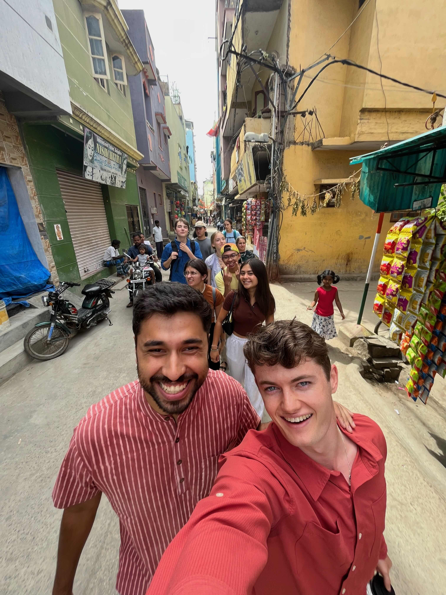

This image is pretty reprentative of my experience in India and what I learned there.
You can see our group, we all had different interests and experiences before this program, and we ended up as great friends.
At the front of the photo you see me and Abner Manzar, who volunteers for the Digital Empowerment Foundation.
The intention of the program was to learn about social entrepreneurship, which is building businesses for social good.
Some of the ventures that spoke the most to me as someone interested in computers were those working to make
technology more inclusive and available, which is the main goal of the Digital Empowerment Foundation.
An idea I became attached to was that to have a significant positive impact in a community, one really should go through the people in that community.
You want to empower those in the community to help their neighbors. That was the idea behind the Soochnapreneurs, who
provided technology and education to women in impoverished communities to be the access point of technology for that community.
That empowered those women to provide the tools their community needed the most.